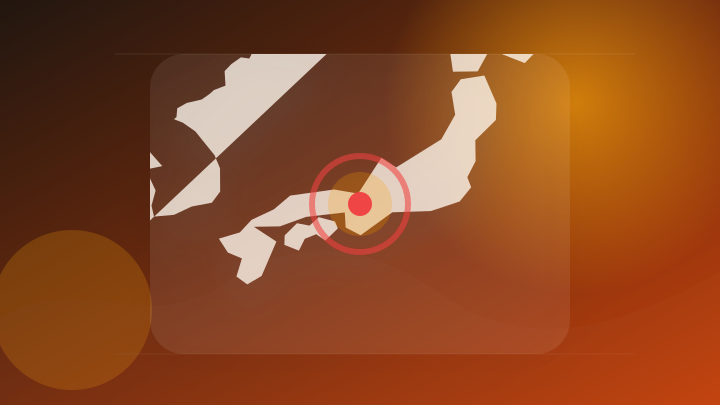
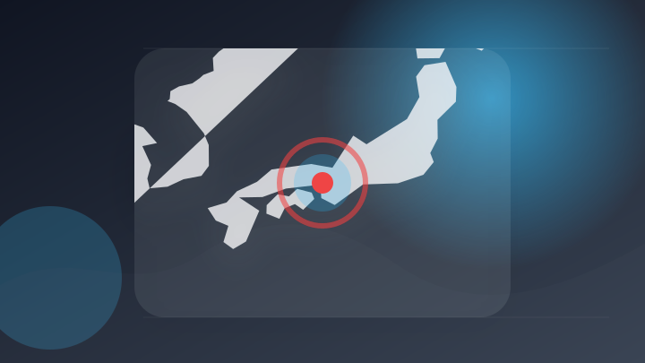
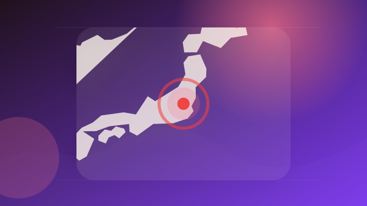

AI
5 topics
中国AI輸出規制強化か 重要技術流出防ぐ
注目ポイント続報を確認
ニュース OpenAIとHugging Face、モデル評価中にセキュリティインシデントが発生し対応
注目ポイント続報を確認
AIアシスタントの無料版を使い倒して判明した、ClaudeとGeminiの決定的な違い
注目ポイント続報を確認
【生成AI活用の次段階】「導入した」だけでは成果が出ない、企業に問われる実装力
注目ポイント続報を確認
Anthropicの「Claude Opus 5」、24日公開間近…GPT・中国AIと三つ巴の戦い
注目ポイント続報を確認
IT業界
4 topics
Mage-Flow — MacでもローカルKで動くMicrosoftの拡散モデル
注目ポイント続報を確認
Apple、Mac刷新とiPad拡充へ同時攻勢—M6搭載MacBook Proや有機EL搭載iPad miniが浮上
Apple、Mac刷新とiPad拡充へ同時攻勢—M6搭載MacBook Proや有機EL搭載iPad miniが浮…
注目ポイント続報を確認
【Appleの最新ニュース】月額＆サブスク対応でより身近に！「新保証プラン」が拓く安心のデバイスライフ
注目ポイント続報を確認
【世界のニュース７選】「Google」クラウド絶好調も、株価下落
注目ポイント続報を確認
政治
6 topics
政府、外国人規制の有識者会議設置へ 議論基に「人口戦略」策定
注目ポイント続報を確認
「AI担当部署の拡充を」自民が政府に緊急提言 高性能AI公開受け [自由民主党（自民党）][高市早苗首相 自民党総裁][AIの時代]
「AI担当部署の拡充を」自民が政府に緊急提言 高性能AI公開受け [自由民主党（自民党）][高市早苗首相 自民党総…
注目ポイント続報を確認
日・ソロモン首脳会談
注目ポイント続報を確認
米国政府出版局（GPO）、1895年から1976年までに刊行された連邦政府刊行物の書誌レコード約120万件を公開
注目ポイント続報を確認
＜独自＞衛星情報分析、24時間体制へ 政府人員拡充、AI活用に着手 自民提言
注目ポイント続報を確認
「副首都」採決折り合わず 野党「同時選禁止」要求―延長国会、大詰め攻防激化
注目ポイント続報を確認
社会
6 topics
日本公庫の元職員の男を収賄容疑で逮捕 融資めぐり便宜か 愛知 [愛知県]
注目ポイント続報を確認

騒音で近隣住民うつに 傷害容疑で６１歳男逮捕―京都府警：時事ドットコム
注目ポイント続報を確認
朝日新聞販売所の従業員を逮捕 女性へのわいせつ容疑
注目ポイント続報を確認
焼き肉チェーン元社長逮捕 「エンジェル税制」悪用か―所得税３．６億円脱税容疑・横浜地検
注目ポイント続報を確認
「生きて帰ってきます」 死亡した大学生がSNS投稿 「なんで精神ぼろぼろに…」とも 江別暴行死裁判
注目ポイント続報を確認

公然わいせつ容疑で男逮捕 車で事故起こし、逃走中に服脱ぐ「身軽になりたかった」|事件・事故
公然わいせつ容疑で男逮捕 車で事故起こし、逃走中に服脱ぐ「身軽になりたかった」
注目ポイント続報を確認
事件・事故
6 topics
89歳妻死亡 88歳夫を逮捕 “熱中症”視野に捜査も… 最新の社会ニュース【随時更新】
注目ポイント続報を確認
800万円収賄容疑、大阪・大東市の元主査再逮捕 随意契約で便宜か [大阪府]
注目ポイント続報を確認
全仏オープン優勝から29年…何が？ 元プロテニス選手の平木理化容疑者（54）を逮捕 ロマンス詐欺事件に関与し30万円詐取か
全仏オープン優勝から29年…何が？ 元プロテニス選手の平木理化容疑者（54）を逮捕 ロマンス詐欺事件に関与し30万…
注目ポイント続報を確認
全仏混合ダブルス優勝の元テニス選手、特殊詐欺に関与した疑いで逮捕
注目ポイント続報を確認
“白トラ営業”疑いで男4人逮捕 運送業の許可受けずにカンパチなど運送か 常態化も視野に捜査（ＫＹＴ鹿児島読売テレビ）
“白トラ営業”疑いで男4人逮捕 運送業の許可受けずにカンパチなど運送か 常態化も視野に捜査（ＫＹＴ鹿児島読売テレビ…
注目ポイント続報を確認

住宅から現金や貴金属を盗んだ疑い、19～20歳の男4人逮捕 栃木・群馬県警捜査班
注目ポイント続報を確認
芸能人の結婚・離婚・交際
3 topics
元妻と再婚宣言の75歳芸能人 膀胱がん手術、咽頭がん治療へて退院 うの、元NHK看板アナらが祝う「結婚式みたい」と出席者の声
元妻と再婚宣言の75歳芸能人 膀胱がん手術、咽頭がん治療へて退院 うの、元NHK看板アナらが祝う「結婚式みたい」と…
注目ポイント続報を確認
元妻と再婚宣言の７５歳芸能人 膀胱がん手術、咽頭がん治療へて退院 うの、元ＮＨＫ看板アナらが祝う「結婚式みたい」と出席者の声
元妻と再婚宣言の７５歳芸能人 膀胱がん手術、咽頭がん治療へて退院 うの、元ＮＨＫ看板アナらが祝う「結婚式みたい」と…
注目ポイント続報を確認
「都内でもドライブデート。結婚は…」川口春奈（31）＆板倉滉（29）が真剣交際 「川口さんはオランダまで会いに」
注目ポイント続報を確認
災害
5 topics
金融
2 topics
ライフ
2 topics
スポーツ
2 topics
経済
4 topics
ゲーム
0 topics
前日範囲で十分な公開情報を取得できませんでした。